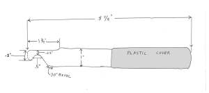
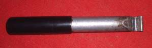
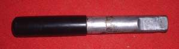
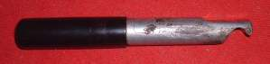
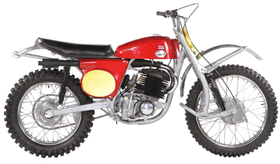
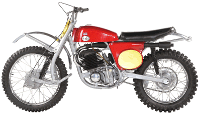

¶ Pinching a tube and putting a hole in it is a real bummer. I got my Breezer Tire Tool maybe 20-30 years ago, maybe more. I really don't remember when I got it. I do remember that after I got it I never put a hole in a tire tube again. If you get one and use it correctly, you will never put a hole in your tubes again either.
The secret is to go slow and take very small "Bites". Lever one small bite of the tire bead on. Make sure the bead, on opposite side of the tire is in the groove in the center of the wheel rim. Then move the Breezer Tool about one inch on the wheel rim and lever another bite of tire bead onto the wheel rim. I have put on some really tight new tires and some super tight old, rock hard tires, with no problems or pinched tubes. Just remember one thing. DO NOT use a cheater bar even though it may be tempting. If you do, sooner or later you will break the tool. If it will not lever over TAKE A SMALLER BITE.
But there is a problem. It would seem they are no longer made, at least I can't find one for sale anywhere. So here are the specifications of one so you can make it yourself. All you need is a length of one inch diameter aluminum round bar about eight or nine inches long. Then get a file or electric grinder and have at it.
You don't have to hold to the specifications with super accuracy. "Close Enough" will work just fine. Sort of like Horse Shoes, Hand Grenades and Atomic Bombs.
 Breezer Tool Specifications |
 Breezer Tool Bottom |
 Breezer Tool Top |
 Breezer Tool Side |


 |
 |
Copyright © 1999-2002 dansmc.com. All rights reserved.